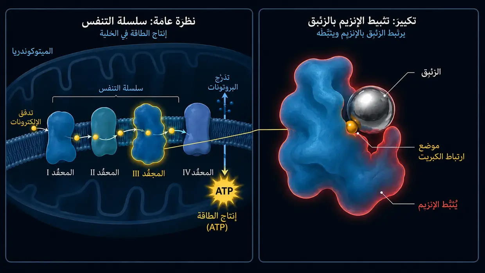

طنين الأذن الناجم عن الأدوية والسموم (السمية الأذنية)
آخر تحديث: يونيو 2026
كنت أنا أيضًا آنذاك ممن عانوا من طنين أذن شديد وجحيمي. صحيح أن المحفّز الأساسي لديّ آنذاك كان طنين الأذن التقليدي الناجم عن الضوضاء (وليس حدثًا دوائيًا حادًا)، لكن ذلك الصوت المستمر كان الهجوم الدائم نفسه تمامًا على أعصابي ونومي وحياتي كلها. وكان الأطباء يقولون لي أيضًا في كثير من الأحيان إن عليّ ببساطة أن أتعلم التعايش معه.
أكتب هذا المقال عن العوامل الكيميائية المسببة لأن هذا الموضوع أدى دورًا مهمًا في بحثي الشخصي. فمنذ عام 2012، تعمّقت في دراسة الكيمياء الحيوية الخلوية – بما في ذلك مجال علم السموم والطب البيئي. وهنا تحديدًا تكتمل الدائرة: ففي عيادات أطباء الطب البيئي (مثل Dr. Klinghardt أو Dr. Mutter) يلاحظ المرء غالبًا ظاهرة مدهشة. فإذا وُجد لدى مرضى طنين الأذن عبء خفي من المواد السامة أو المعادن الثقيلة بوصفه عاملًا مؤثرًا رئيسيًا، فقد تؤدي إزالة السموم الموجّهة على المستوى الخلوي في كثير من الأحيان إلى تخفيف واضح أو ملموس لأصوات الأذن. وما أشاركه هنا هو مستوى معرفتي الذي توصلت إليه من هذا البحث – وهو الأساس لنُهج الحل التي سنتناولها لاحقًا على هذا الموقع استنادًا إلى هذه الأبحاث.
الهجوم الكيميائي من الداخل
عندما نفكر في طنين الأذن، تتبادر إلى أذهاننا في الغالب صورتان على الفور: حفل موسيقي صاخب (الضوضاء)، أو توتر شديد أو توتر داخلي ناجم عن صدمة (نفسي جسدي). غير أن هناك مسببًا ثالثًا ليس ميكانيكيًا ولا عاطفيًا، بل كيميائيًا بحتًا: طنين الأذن الناجم عن الأدوية أو السموم. وبحسب تقديري، يُعد هذا النوع من طنين الأذن من أقل الأنواع انتشارًا – لكن من باب استكمال الصورة، أود أن أعرض أيضًا وجهة نظري بشأن هذا المسبب الثالث. ويُسمى ذلك في المصطلح المتخصص السمية الأذنية (أي: «السمية للأذن»).
قد يبدو الأمر مجردًا للوهلة الأولى، لكن أذننا الداخلية شديدة الحساسية تجاه بعض المواد الكيميائية. ويمكن لبعض الأدوية أو السموم البيئية أن تصل عبر مجرى الدم مباشرة إلى الأذن الداخلية، فتُهيّج الخلايا الشعرية الحساسة أو العصب السمعي، بل وقد تُلحق بها الضرر.
الآلية: كيف تولّد المواد الكيميائية أصواتًا
لنتذكر القناة الأيونية عند قمة الأهداب الساكنة (الستيريوسيليا)، التي تظل بعد فرط التحميل مفتوحة أكثر مما ينبغي بصورة دائمة ولا تعود تنغلق كما ينبغي – كما شرحت من قبل في صفحتي الفرعية عن طنين الأذن الناجم عن الضوضاء. ففي حالة الصدمة الناتجة عن الضوضاء، تغيّر القوة الميكانيكية للموجات الصوتية الوضع الهندسي للأهداب الحسية الدقيقة.
أما في طنين الأذن الناجم عن الأدوية أو السموم، فيحدث في النهاية غالبًا شيء مشابه جدًا، لكن الطريق إليه مختلف. ويجب أن نتصور كل خلية شعرية مفردة في الأذن، من حيث المبدأ، كبطارية بيولوجية صغيرة. فهي تحافظ على توازن بالغ الدقة بين الطاقة (ATP) والمعادن والجهد الكهربائي.
ويمكن للسموم البيئية أو الجرعات الدوائية السامة أن تخل بهذا التوازن الدقيق، إذ تعيق بشدة عمل محطات طاقة الخلية – التي تسمى في المصطلح المتخصص الميتوكوندريا. وعندئذ يحدث على المستوى الخلوي، بحسب فهمي للكيمياء الحيوية، ما يأتي:
ولأن الميتوكوندريا لا غنى عنها لإمداد الخلية بالطاقة، ينخفض تبعًا لذلك مستوى الطاقة في الخلية – أي مستوى ATP لديها. ونتيجة لذلك، لا تعود المضخات المتناهية الصغر في جدار الخلية، التي تستهلك باستمرار ATP – أي طاقة الخلية – لأداء عملها، قادرة ببساطة على العمل بالسرعة الكافية للحفاظ على التوازن الكيميائي. ومن ثم يتراكم الكالسيوم داخل الخلية. ولأن الكالسيوم هو المحفّز المباشر لنقل الإشارة في علم الأحياء، فإن هذا الفائض من الأيونات يجبر الخلية على إطلاق «إشارات خاطئة» بصورة دائمة وغير منضبطة. ولا أرى في ذلك مصادفة غامضة، بل آلية كيميائية حيوية تلقائية ومنطقية. ويُدرك الدماغ هذا الوابل الكهربائي المتواصل على أنه صوت.
ويتوقف الصوت المحدد الذي تسمعه عندئذ – سواء أكان صفيرًا حادًا أم أزيزًا أم طنينًا منخفضًا – في الغالب ببساطة على الموضع الدقيق في القوقعة (حلزون الأذن) الذي تقع فيه الخلايا الشعرية المتأثرة. وفي هذه اللحظة لا تُدمَّر الأذن ماديًا في معظم الحالات، لكن نظامها الداخلي الدقيق يختل.
حالات القصر الكهربائي (العصب السمعي)
لا تتعرض الخلايا الشعرية وحدها للخطر، بل يتعرض له أيضًا «كابل الكهرباء» نفسه – أي العصب السمعي. ويحيط بهذا العصب غلاف واقٍ هو الميالين. وهذه الطبقة العازلة غنية جدًا بالدهون والمعادن، ولذلك تتفاعل بحساسية خاصة مع المواد السامة التي تدور في الدم. وإذا أضعف الإجهاد الكيميائي هذا الغلاف أو جعله «أرق»، فلن يعود العصب ينقل الإشارات بصورة سليمة. وتنشأ حالات «قصر كهربائي» فعلية.
وهنا يتجلى المنطق الخالص لتشريحنا: فالعصب السمعي ليس سلكًا منفردًا بسيطًا، بل حزمة سميكة تضم آلاف الألياف العصبية المتناهية الصغر. وكل ليفة من هذه الألياف مسؤولة عن نقل درجة صوتية محددة جدًا. فإذا نشأت دائرة القصر الناجمة عن السموم (تحلل الميالين) تحديدًا عند الليفة العصبية المسؤولة عن الترددات العالية، فسيسجل دماغك منطقيًا صفيرًا حادًا. وإذا تأثرت ليفة مخصصة للأصوات المنخفضة، فستسمع طنينًا منخفضًا. لذلك فإن ما تدركه من ضجيج أو أزيز أو صفير ليس مصادفة على الإطلاق – بل يعتمد إلى حد كبير على الموضع المتناهي الصغر في الكابل الرئيسي الذي تضرر فيه العزل.
القانون الشامل لطنين الأذن
عندما نجمع كل قطع هذا اللغز، يتبلور قاسمٌ مشترك مركزي: فوفقًا لأعمق قناعتي وتجربتي، يكون طنين الأذن في نهاية المطاف نتيجة لأعصاب معالجة السمع المتهيجة والمفرطة الاستثارة بصورة مزمنة. ومن الناحية الفيزيائية، لا يكاد يهم أين تنطلق بالضبط شرارة هذا الفرط في الاستثارة:
- سواء علقت الخلايا الشعرية (بسبب الضوضاء أو الأدوية) في وضع الطوارئ وأغرقت العصب السمعي باستمرار بالغلوتامات…
- أم هاجمت السموم البيئية والمعادن الثقيلة عزل الأعصاب (الميالين) وتسببت هناك مباشرة في دوائر قصر…
- أم تراكم في الدماغ توتر نفسي جسدي هائل ومزمن ووضع مراكز معالجة السمع، إن جاز التعبير، تحت تيار مستمر «من الأعلى»…
ما إن يفهم المرء هذا المنطق الشامل، حتى يفقد طنين الأذن غالبًا رهبته الغامضة بالكامل.
أما النتيجة النهائية فهي، بحسب تجربتي، تكاد تكون دائمًا الشيء نفسه تمامًا: يكون الجهاز العصبي في هذه المنطقة متهيجًا بصورة مزمنة ويرسل وابل استغاثة كهربائيًا متواصلًا. وما إن يفهم المرء هذا المنطق الشامل، حتى يفقد طنين الأذن غالبًا رهبته الغامضة بالكامل – ويصبح الطريق إلى الحل واضحًا تمامًا فجأة.
المسببات الشائعة (مواد ذات سمية أذنية)
لكن حسنًا، لنواصل: هناك طائفة كاملة من المواد المعروفة بأنها قد تكون سامة للأذن. (مهم: هذه ليست قائمة طبية للتشخيص الذاتي، بل هي مخصصة للفهم العام فقط!)
1. الأدوية
قد تُسبّب بعض المستحضرات الدوائية فرط استثارة الأذن الداخلية. لكن لا يكفي أن نعرف أسماءها فقط – بل يجب أن نفهم لماذا تُخرج النظام عن مساره. ولا يصبح لنهجنا اللاحق (طاقة الخلية وإزالة السموم) معنى أصلًا إلا عندما نفهم آلية الضرر. ومن أشهر المجموعات:
مسكنات الألم بجرعات عالية (وخاصة الأسبرين/ASS)
وللطمأنة أولًا: لا يسبب قرصٌ عادي للصداع طنين الأذن في العادة. فبحسب الأبحاث، توجد هنا غالبًا مفارقة صارمة مرتبطة بالجرعة. ولا يصبح الأمر خطيرًا في الغالب إلا عند جرعات عالية حقيقية تبلغ حد السمية (غالبًا عدة غرامات يوميًا). وإذا حدث ذلك، تشير النماذج الدوائية إلى أن الدواء يطلق في الأذن الداخلية تفاعلًا متسلسلًا من ثلاث مراحل:
- المحرك يتلعثم: يُفترض أن المادة الفعالة تعطّل بريستين (Prestin)، وهو بروتين متناهٍ في الصغر يعمل مثل محرك في الخلايا الشعرية الخارجية. وبذلك ينهار مضخم الصوت في الأذن. وكرد فعل مذعور، يرفع الدماغ غالبًا «منظم الصوت» المركزي لديه، أي الكسب المركزي (Central Gain)، إلى أقصى حد كي يسمع أي شيء أصلًا.
- فرط حساسية الأعصاب: وفي الوقت نفسه، تشير النماذج إلى أن الدواء يضع المستقبلات الموجودة عند العصب السمعي في حالة من قابلية الاستثارة المرتفعة. وتنخفض عتبة الاستثارة، فيستجيب الجهاز العصبي بحساسية أكبر بوضوح حتى لأصغر الإشارات.
- انقطاع التيار (الاشتعال): بحسب الأبحاث الكيميائية الحيوية، يعمل الأسبرين بجرعات عالية بوصفه «عامل فكّ اقتران» في الميتوكوندريا. فهو، مجازيًا، يسحب قابس الكهرباء من الخلية (نقص ATP). وهنا تحديدًا يكمن الاختلاف المنطقي المثير عن صدمة الضوضاء: ففي حالة الضوضاء، تنثني الأهداب الدقيقة للخلية بفعل القوة الميكانيكية انثناءً حقيقيًا. وبذلك تظل قناة الكالسيوم مفتوحة باستمرار مثل باب عالق، ويتدفق الكالسيوم إلى الداخل بلا كابح. أما عند تناول جرعة زائدة من الأسبرين، فلا يحدث ذلك. تبقى الأهداب في مواضعها سليمة تمامًا. وهنا تكون الكيمياء «وحدها» هي التي اختل توازنها. فلا يدخل كالسيوم أكثر من المعتاد أصلًا – لكن بسبب الهبوط السريع في الطاقة، لا تعود مضخات الكالسيوم المتناهية الصغر في الخلية قادرة ببساطة على إخراجه مجددًا بالسرعة الكافية. وفي تلك اللحظة تعجز الخلية تمامًا عن التعامل حتى مع الكمية الطبيعية من الكالسيوم. أما النتيجة النهائية فهي نفسها: يتراكم الكالسيوم في الداخل ويجبر الخلية على إفراز الناقل العصبي الغلوتامات بلا انقطاع.
النتيجة المحتملة لطنين الأذن: يلتقي هذا الفيضان غير المنضبط من الغلوتامات بأعصاب انخفضت عتبة استثارتها مسبقًا (المرحلة 2)، ويُرسل إلى دماغ بلغ منظم الصوت لديه أقصى حد (المرحلة 1). فينشأ وابل متواصل يصم الآذان. وهذا المنطق الخلوي البسيط تحديدًا يفسر أيضًا ظاهرة يومية لا يملك حتى كثير من الأطباء إجابة مقنعة عنها في أحيان كثيرة: لماذا يعود الهدوء إلى أذن العم أو الخال الذي تناول طوال أسبوع جرعة زائدة هائلة من الأسبرين، غالبًا بعد وقت قصير من إيقافه – بينما يعاني ابن أخ ذلك الرجل أو ابن أخته، البالغ من العمر 26 عامًا والذي لم يذهب إلا مرتين إلى نادٍ صاخب، منذ أربعة أشهر من طنين أذن لا يزول ببساطة؟ بالنسبة إليّ، الإجابة هنا واضحة وضوح الشمس: كان الأمر لدى ذلك العم أو الخال انقطاعًا كيميائيًا حيويًا للتيار اقترن بفرط حساسية العصب السمعي. وبمجرد إيقاف الدواء بالتشاور مع الطبيب وتخلّص الجسم منه، يمكن لمحطات طاقة الخلية أن تعود إلى العمل في وضعها الفيزيولوجي الطبيعي. وهكذا تستعيد المضخات الطاقة اللازمة، فتتمكن من إزالة الكالسيوم الزائد، ويمكن للنظام أن يعود إلى العمل من دون أخطاء. أما ابن الأخ أو ابن الأخت الذي ذهب إلى النادي، فقد تعرّض لتأثير ميكانيكي عنيف ومباشر. وبعد ذلك، وبحسب بحثي وفهمي، تكون أهدابه الدقيقة في وضع هندسي متغير: بعضها مائل بدرجة أكبر وبعضها بدرجة أقل. ونتيجة لذلك تبقى القنوات الأيونية مفتوحة أكثر بصورة دائمة، فيدخل إلى الخلية، حتى مع بقاء إمداد الطاقة ثابتًا، كالسيوم أكثر مما هو مقرر فيزيولوجيًا. وهذا يشبه أن يثني المرء مفصل باب بقوة غاشمة. ومنطقيًا، لا ينصلح ذلك من تلقاء نفسه ببساطة خلال عطلة نهاية أسبوع لمجرد انتهاء الضوضاء – وستجد مزيدًا من المعلومات عن ذلك في صفحتي الفرعية عن طنين الأذن الناجم عن الضوضاء.
مضادات حيوية محددة (الأمينوغليكوزيدات)
لا تُستخدم هذه المضادات الحيوية القوية غالبًا إلا في المستشفى لعلاج العدوى البكتيرية الشديدة (مثل الجنتاميسين). ولها خاصية خبيثة للغاية: فهي تتراكم غالبًا بصورة موجّهة في سائل الأذن الداخلية، ولا تتحلل هناك مجددًا إلا ببطء مؤلم – وقد تبقى فيه أسابيع أو أشهرًا. وهناك تتفاعل مع الحديد الموجود في الجسم وتولّد انفجارًا هائلًا من «الجذور الحرة» (ROS). وهذا يشبه حريقًا كيميائيًا حيويًا واسع النطاق يهاجم أغشية الخلايا الحساسة وهيكل الأكتين الداخلي للأهداب. وهنا يعمل منطق بيولوجي بسيط ذو نتيجتين:
- النتيجة 1 (موت الخلية): إذا كان الجسم في ذلك الوقت ضعيفًا أصلًا، أو لا يملك إلا موارد ضئيلة من المغذيات، أو كانت هناك أضرار سابقة، تنهار الخلية بالكامل تحت هذا الحريق الكيميائي وتموت (الاستماتة). والنتيجة المتناقضة: في هذه الحالة لا ينشأ طنين الأذن في الغالب. فالخلية الميتة لا تبث شيئًا بعد الآن. وبدلًا من ذلك ينشأ فقدان سمع صامت خالص (صمم) عند هذا التردد تحديدًا.
- النتيجة 2 (صراع البقاء = طنين الأذن): تنجو الخلية من الهجوم بالكاد، لكنها تظل مصابة بأضرار بنيوية هائلة. وهذا في الأساس يماثل صدمة الضوضاء تمامًا، غير أنه ناجم عن الكيمياء وحدها. ينهار الهيكل الداخلي الصلب (الأكتين)، فتذبل الأهداب حرفيًا مثل أزهار بلا ماء. لكن الخلية ما تزال حية! ولأنها حية، تحاول بيأس مقاومة الكالسيوم المتدفق عبر الغشاء المثقّب. ولأن تدفق الأيونات هذا هو الأمر الكيميائي المباشر لنقل الإشارة، تُجبر الخلية الشديدة الضرر على إطلاق الناقل العصبي الغلوتامات بلا انقطاع نحو العصب السمعي وهي في وضع ذعر دائم. ويتحول صراع البقاء الخلوي هذا إلى وابل كهربائي متواصل – وهذا تحديدًا ما تدركه على أنه طنين الأذن.
مدرّات البول (أقراص إدرار البول القوية)
إن ما يسمى مدرّات البول العروية لا تسحب الماء من الجسم فحسب، بل تطرد أيضًا كميات هائلة من الشوارد مثل البوتاسيوم والصوديوم. والمشكلة؟ تمتلك الأذن الداخلية مصدر جهد كهربائي صغيرًا خاصًا بها، هو الشريط الوعائي. وتضخ هذه الطبقة النسيجية البوتاسيوم بلا توقف إلى سائل الأذن للحفاظ هناك على جهد كهربائي ثابت – فهذه هي البطارية التي تستمد منها الخلايا الشعرية تيارها اللازم للسمع. وتعطّل أقراص إدرار البول آلية الضخ الكيميائية الحيوية هذه تحديدًا. ونتيجة لذلك ينهار الجهد الكهربائي في الأذن انهيارًا هائلًا. تصبح البطارية البيولوجية «فارغة» فجأة، ويدخل نظام السمع في حالة إنذار فوضوية تتفجر في صورة ضجيج أو صفير.
أدوية العلاج الكيميائي (مثل السيسبلاتين)
تعتمد أدوية السرطان الشرسة هذه غالبًا على البلاتين (وهو معدن ثقيل). وهي مبرمجة للتدخل في الحمض النووي للخلايا. ولكن إذا تسبب هذا الدواء في حدوث طنين الأذن، فإن ذلك يرجع، وفقًا للنماذج الدوائية، إلى حريق كيميائي حيوي واسع النطاق حقيقي داخل الأذن الداخلية: ففي هذه الحالة يجرّد السيسبلاتين الخلية تمامًا من أهم مادة واقية ينتجها الجسم نفسه (الغلوتاثيون). ومن دون هذا الدرع الواقي، تحفر الجذور الحرة ثقوبًا مجهرية في غشاء الخلية وتدمر المضخات الأيونية. والنتيجة اختلال شديد في توازن الأيونات: يغمر الكالسيوم الخلية ويجبرها على إطلاق الغلوتامات بصورة متواصلة. وفي الوقت نفسه، يكون السيسبلاتين شديد السمية العصبية ويفكك طبقة الميالين (العزل) في العصب السمعي تفكيكًا حقيقيًا. وعندما يلتقي الوابل المتواصل الصادر من الخلية المتضررة بعصب غير محمي ومكشوف، تنشأ دوائر قصر وحالات إطلاق خاطئ حقيقية قابلة للقياس مباشرة على الكابل الرئيسي المؤدي إلى الدماغ. وهنا أيضًا ينطبق التفرع البيولوجي لطنين الأذن: إذا دُمّرت الخلية بالكامل (الاستماتة)، ينشأ الصمت (الصمم) في الغالب. أما إذا نجت كحطام شديد الضرر، بأغشية متسربة وأعصاب مكشوفة، فإنها تطلق غالبًا إشارة تشويش دائمة. وهذا يفسر لماذا يكون طنين الأذن الناجم عن العلاج الكيميائي شديد العناد في كثير من الأحيان.
الكينين (دواء الملاريا ومستحضرات مضادة لتقلصات العضلات)
للكينين تأثير قوي مضيق للأوعية. فالأذن الداخلية طريق تشريحي مسدود تمامًا – ولا يمدها بالدم سوى شريان واحد متناهٍ في الصغر، هو الشريان التيهي (Arteria labyrinthi). ولا توجد هناك «طرق التفافية». وإذا ضيّق الكينين هذا الشريان المتناهي الصغر وجعل خلايا الدم الحمراء في الوقت نفسه أقل مرونة، يتعثر تدفق الدم. وعندئذ تُقطع عن الخلايا الشعرية إمدادات الأكسجين والمغذيات الضرورية حتمًا. فتدخل في ضيق تنفس شديد وتتحول فورًا إلى وضع الذعر المرتبط بطنين الأذن.
2. المعادن الثقيلة والسموم البيئية
تتصرف المعادن الثقيلة مثل الزئبق والرصاص والألومنيوم وكذلك الكادميوم وما إلى ذلك، على المستوى الخلوي، كمخربين شديدي العدوانية. ومن يتعمق في بروتوكولات إزالة السموم يعرف أن هذه المعادن لا تسمّم خلايا الأذن الداخلية تسميمًا منتشرًا فحسب، بل تتدخل تحديدًا في العمليات البيولوجية وتعطّلها. ويحدث ذلك في القوقعة وعند العصب السمعي عبر أربع آليات مدمّرة للغاية:
- 01حصان طروادة
- 02اختراق الثيول
- 03كرة الهدم
- 04مفرمة الميالين
الآلية 1: حصان طروادة (إزاحة العناصر النزرة)
غالبًا ما تتشابه معادن مثل الكادميوم والزئبق وما إلى ذلك كيميائيًا بصورة مدهشة مع العناصر النزرة الضرورية للحياة – ولا سيما الزنك والسيلينيوم. فينخدع الجسم ويدمج المعدن الثقيل في البروتينات بدلًا من الزنك. والنتيجة وخيمة: فالزنك يعمل عند مستقبلات العصب السمعي كنوع من «المكابح» الطبيعية. وهو يضمن ألا يفرط العصب في الاستجابة فورًا لكل منبه متناهٍ في الصغر. وإذا أزاح معدن ثقيل هذا الزنك، تعطلت تلك المكابح بالكامل. وعندئذ ترتطم الإشارات الصوتية بالجهاز العصبي بلا كابح، وهو ما يظهر، بحسب تجربتي، في صورة طنين أذن يصم الآذان. وفي الوقت نفسه، تُعطّل إزاحة السيلينيوم إنتاج أهم مضاد أكسدة يصنعه الجسم نفسه (الغلوتاثيون) بدرجة هائلة. وتصبح حماية الخلية مهددة بالانهيار.
الآلية 2: اختراق الثيول (ثني البروتينات)

ولدى المعادن الثقيلة أيضًا ألفة كيميائية هائلة مع الكبريت. فمعظم إنزيماتنا ومضخات الخلايا المتناهية الصغر (مثل مضخات الكالسيوم المعتمدة على ATP) تمتلك مواضع ارتباط محتوية على الكبريت، تسمى مجموعات الثيول (-SH). وعندما يصل المعدن الثقيل إلى الأذن الداخلية، يرتبط فورًا بمجموعات الكبريت هذه. وفي اللحظة التي يتصل فيها المعدن بالإنزيم، يجبر البروتين على تغيير بنيته ثلاثية الأبعاد – أي إنه ينثني حرفيًا. وبذلك تُعطَّل مضخة الكالسيوم في الخلية الشعرية وتفقد وظيفتها.
الآلية 3: كرة الهدم البيولوجية (التدمير المباشر للخلايا)
وإلى جانب تخريب المضخات، تهاجم المعادن أيضًا عتاد الخلية مباشرة وماديًا. إذ يدخل الرصاص والكادميوم إلى الميتوكوندريا (محطات طاقة الخلية)، ويتمركزان في سلسلة التنفس الخلوي ويخنقان إنتاج ATP بدرجة هائلة. وبعبارة تصويرية، تصبح الخلية مهددة بالاختناق من الداخل. وفي الوقت نفسه، تطلق المعادن في الأذن انفجارًا من الجذور الحرة التي تؤكسد حرفيًا الغلاف الواقي الغني بالدهون (الغشاء) للخلية الشعرية – فيتزنخ ويذوب ويصبح مثقّبًا (بيروكسدة الدهون). ويتدفق الكالسيوم السام إلى الداخل كما لو عبر سد مكسور. وإضافة إلى ذلك، تهاجم المعادن الهيكل البروتيني الصلب (الأكتين) داخل الأهداب الحسية المتناهية الصغر. فتنهار الجسور الجزيئية، وتذبل الأهداب وتنثني وتُبقي قنوات الاستثارة عالقة في وضع الفتح الدائم.
الآلية 4: مفرمة الميالين (الهجوم على الكابل الرئيسي)
وتنهش المعادن الثقيلة أيضًا الكابل نفسه مباشرة – أي العصب السمعي – وتدمر طبقته العازلة، الميالين. وتتكون هذه الطبقة من الدهون بنسبة تقارب 80%، مما يجعلها ضحية مثالية للإجهاد التأكسدي. فتنخر الجذور الحرة الدهون وتزيلها حرفيًا. ويرتبط الزئبق، على سبيل المثال، بما يسمى «Myelin Basic Protein»، وهو الغراء الجزيئي للطبقة العازلة، فتبدأ هذه الطبقة بالتقشر. وفي علم السموم، يُشتبه بقوة في أن الرصاص يمضي خطوة أبعد ويضرّ تحديدًا بما يسمى خلايا شوان – وهي عمال البناء المتناهون في الصغر الذين يُفترض بهم أصلًا إصلاح الميالين. ومن دون العزل، تتباطأ إشارات السمع الكهربائية بدرجة هائلة، وتقفز إلى ألياف عصبية مجاورة ومكشوفة (تداخل الإشارات، Cross-Talk)، وتولد حالات إطلاق خاطئ هائلة.
-
01دخول كيميائي
يصل دواء بجرعة عالية تبلغ حد السمية أو معدن ثقيل أو سم بيئي إلى الأذن الداخلية عبر مجرى الدم.
-
02اختلال التوازن
ينخفض ATP، ولا تعود المضخات قادرة على مواكبة العمل، ويتراكم الكالسيوم داخل الخلية، وتترقق طبقة الميالين.
-
03إشارة خاطئة دائمة
تطلق الخلية الضعيفة الغلوتامات باستمرار، أو تقفز الإشارات إلى الألياف المجاورة – فيدرك الدماغ ذلك بوصفه صوتًا.
ولكن لماذا لا يصاب الجميع إذن بطنين الأذن؟ (يانصيب المعادن الثقيلة والعاصفة المثالية)
يفرض سؤال منطقي نفسه هنا: إذا كان الزئبق (من السمك أو الأملغم) والرصاص (من الأنابيب القديمة) وما إلى ذلك يعيثان هذا القدر الهائل من الدمار، فلماذا لا يصاب نصف البشر فورًا بطنين الأذن بعد تناول بيتزا بالتونة؟ تكمن الإجابة في الدروع الواقية التي ينتجها جسمنا وفي يانصيب بيولوجي حقيقي – وفي حقيقة أن طنين الأذن لا ينشأ تقريبًا أبدًا عن عامل واحد معزول.
1. اليانصيب السمي (موضع الضعف المحلي):
لا تمتلك المعادن الثقيلة نظام GPS مدمجًا خاصًا بالأذن. فهي تدور عمياء في الدم وتبحث عن موضع المقاومة الأقل (Locus minoris resistentiae). وغالبًا ما يكون مكان ترسّبها محض صدفة، ويعتمد على المكان الذي توجد فيه نقطة ضعف في جسمك في تلك اللحظة. فإذا كنت، على سبيل المثال، تطحن أسنانك بشدة ليلًا أو لديك التهاب صامت في منطقة الرقبة والفك، تكون نفاذية الأوعية المحيطة بأذنك مرتفعة للغاية. وعندئذ يكون ما يسمى الحاجز الدموي التيهي، الذي يُفترض به في الأصل حماية الأذن، مفتوحًا على مصراعيه. فيجد الزئبق هذا الباب المفتوح ويترسب تحديدًا هناك عند العصب السمعي، في حين قد يواصل طريقه ببساطة لدى شخص آخر.
2. مكب نفايات الجسم، ودرع الغلوتاثيون الواقي، والمخزون الأولي:
ينتج الجسم السليم في الكبد كميات هائلة من الغلوتاثيون – وهو جزيء يقيّد المعادن الثقيلة كما لو كان يضعها في أصفاد ويطرحها قبل أن تصل إلى الأذن. لكن هنا تبرز الحقيقة القاسية بشأن كمية ما يدخل الجسم: فبعض الناس يتعرضون ببساطة – وغالبًا من دون أن يعلموا إطلاقًا – لكميات من المعادن الثقيلة أكبر بكثير مما يتعرض له غيرهم. وقد يكون ذلك عبر هواء تنفس ملوث، أو حشوات أملغم قديمة في الفم، أو مكان العمل، أو التدخين، أو أطعمة تحتوي على معادن ثقيلة، أو الاحتكاك الدائم بأغراض يومية ملوثة. وفي النهاية، تكون الصورة دائمًا مزيجًا سميًا من كمية ما يدخل الجسم في حد ذاتها وقدرة الجسم الذاتية على تقييد هذه السموم وطرحها. وإذا لم يستطع الجسم فعل ذلك، فإنه غالبًا ما يخزن السموم في «مستودعات» يُفترض أنها آمنة (مثل العظام أو النسيج الدهني العادي) لسحبها من مجرى الدم. وهنا تحديدًا يختبئ فخ بيولوجي قاتل لسمعنا: فجهازنا العصبي – ولا سيما طبقة الميالين العازلة للعصب السمعي – يتكون من دهون خالصة بنسبة تقارب 80%. ولذلك عندما يحاول الجسم بيأس أن «يركن مؤقتًا» المعادن الثقيلة المحبة للدهون (القابلة للذوبان فيها) داخل النسيج الدهني، ففي هذا اليانصيب البيولوجي التعس، غالبًا ما يُصاب تحديدًا هذا النسيج العصبي بالغ الحساسية أو البنى المحيطة بالخلايا الشعرية.
ويضاف إلى ذلك واقع بيولوجي قاسٍ كثيرًا ما يُسكَت عنه: يدخل كثير من الناس هذا اليانصيب السمي منذ يوم ولادتهم بمخزون ممتلئ أصلًا. لماذا؟ لأن الدراسات تشير إلى أن الأمهات ينقلن خلال الحمل جزءًا من مخزون المعادن الثقيلة الذي تراكم لديهن على مدى سنوات عبر المشيمة إلى الجنين. ولذلك يكون البرميل الخلوي لدى بعض الناس أكثر امتلاءً بوضوح منذ البداية.
ويصبح الأمر خطيرًا في نهاية المطاف عندما ينقلب نظام الحماية هذا: فبسبب توتر شديد أو عوامل وراثية أو نقص في المغذيات، تصل عملية إزالة السموم فجأة إلى أقصى حدود قدرتها. وتنفتح مستودعات الجسم أو لا تُلتقط السموم الوافدة حديثًا من الأساس، فتدور في الدم وتبحث حتمًا – كما في اليانصيب المذكور – عن موضع ضعف داخل الجسم.
3. حالة المزيج القاتل (العاصفة المثالية):
لكننا نرى هنا في الواقع البيولوجي غالبًا صورة مركّبة شديدة التعقيد – وهذا يزيل أيضًا سوء الفهم القائل إن كل من يصاب بطنين الأذن بعد حدث ضوضائي يكون بالضرورة مصابًا بتسمم كامل بالمعادن الثقيلة. فالأمر ليس كذلك.
بل كثيرًا ما يحدث الآتي: يحمل الإنسان بالفعل عبئًا سميًا أساسيًا معينًا، ناجمًا عن السموم البيئية أو المعادن الثقيلة، داخل الخلايا الشعرية أو الميتوكوندريا الموجودة فيها أو مباشرة عند العصب السمعي. وربما تكون طبقة الميالين قد ترققت قليلًا بالفعل، أو تكون مضخات الكالسيوم قد اقتربت من حدود قدرتها، أو تعمل الخلايا جاهدة عند الحد الأقصى. وغالبًا لا يسبّب هذا وحده بعدُ أيَّ طنين أذن دائم. فجسمك يعوّض ذلك ويظل بالكاد متوازنًا على حبل مشدود.
لكن بعد ذلك يأتي مزيج الحياة: تدخل مرحلة من التوتر المزمن الشديد. وتضيّق هرمونات التوتر (الأدرينالين/الكورتيزول) الأوعية الدموية، وتخفض تدفق الدم في الأذن بدرجة هائلة، وتحرمك من النوم الذي يتيح الإصلاح. ولا يعود النظام قادرًا على التجدد ليلًا. وإذا تعرضت، وأنت تحديدًا في هذه الحالة الشديدة الهشاشة، لحدث ضوضائي أيضًا (سواء أكان ذروة ضوضاء حادة أم تعرضًا مزمنًا مستمرًا للصوت)، فإن النظام ينهار نهائيًا في موضع ما من هذه السلسلة. ولا يعود العتاد المتضرر مسبقًا قادرًا ببساطة على امتصاص هذه القوة الميكانيكية. فينهار توازن الأيونات، أو يتداعى هيكل الأكتين، أو تفشل طبقة الميالين نهائيًا – وقد تنشأ الإشارات الكهربائية الدائمة.
إنه، من وجهة نظري، المزيج القاتل: فالسم يضعف العتاد تدريجيًا، والتوتر يقطع إمداد الأكسجين، ثم لا تكون الضوضاء غالبًا سوى القطرة الأخيرة التي تجعل البرميل الخلوي الممتلئ حتى الحافة أصلًا يفيض.
وبحسب تصوري، يوجد بالطبع عند الطرف الآخر من الطيف أيضًا طنين الأذن الناجم حصرًا عن أدوية سامة أو عن تسمم هائل بالمعادن الثقيلة. فإذا كانت الجرعة الكيميائية مرتفعة بما يكفي (مثلًا بسبب علاج كيميائي شرس أو حالات تسمم حادة)، فلا تكون هناك حاجة على الإطلاق إلى «عاصفة مثالية»، ولا إلى حدث ضوضائي إضافي. ففي هذه الحالات يكفي السم وحده تمامًا لتعطيل محطات طاقة الخلية أو الإضرار بالأعصاب.
لماذا يكون طنين الأذن الناجم عن السموم (المعادن الثقيلة ومبيدات الآفات) عنيدًا في كثير من الأحيان
من يتجنب الضوضاء يوقف العامل المسبب فورًا. أما في طنين الأذن الناجم عن السموم – وأعني هنا على وجه التحديد العبء الناتج عن سموم بيئية حقيقية أو مبيدات آفات أو معادن ثقيلة – فغالبًا ما يكون الأمر أشد تعقيدًا بوضوح. إذ يصبح هذا الشكل بالغ الاستعصاء والعناد على نحو خاص عندما يتضح بالفعل أن هذه المواد تمثل الآلية الرئيسية أو عاملًا أكبر في حدوث طنين الأذن. ويرجع ذلك إلى أنها تترسب فعلًا في أعماق النسيج العصبي والخلايا. فهي لا تختفي ببساطة من مجرى الدم بعد ساعات قليلة مثل قرص عادي لتسكين الألم. بل تتشبث بقوة، ولا يستطيع الجسم غالبًا طرح هذه السموم العنيدة مجددًا إلا بمشقة شديدة، وببطء بالغ، وعلى امتداد فترة زمنية طويلة.
ما العمل؟
وماذا يمكن للمرء أن يفعل الآن؟ ستجد الأدلة العلمية والأدلة المستمدة من الممارسة بشأن الآليات الموصوفة هنا في صفحة مصادري. ومن يرغب في التعمق ومعرفة ما يساعد بصورة ملموسة، بحسب رؤيتي وتجربتي، في طنين الأذن الناجم عن الأدوية أو السموم، يمكنه ببساطة النقر على الرابط التالي:
تنبيه مهم
لا توقف أبدًا الأدوية التي لا تُصرف إلا بوصفة طبية من تلقاء نفسك! عند وجود أصوات في الأذن مرتبطة بتناول الأدوية – ولا سيما إذا ظهرت بصورة حادة – يُرجى استشارة طبيب في وقت قريب لتوضيح الإجراء اللاحق. ويجب أن يكون كل تغيير في أدويتك تحت إشراف طبيب.
إن المحتويات والنماذج التفسيرية والاستراتيجيات التي أشاركها على هذا الموقع ليست استشارة طبية، بل هي تقريري عن تجربتي الشخصية وبحثي الخاص. فكل جسم يختلف عن غيره. أنا لست طبيبًا ولا أقدم وعودًا بالشفاء. وعند وجود شكاوى صحية، يُرجى استشارة طبيب مؤهل. ويقع تطبيق النُهج الموصوفة هنا على مسؤوليتك الخاصة.